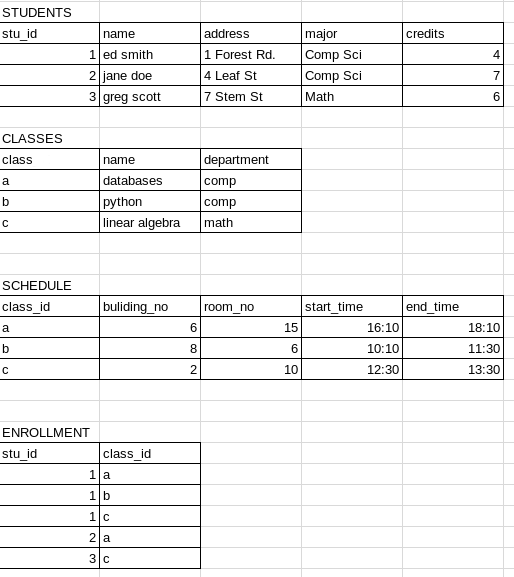
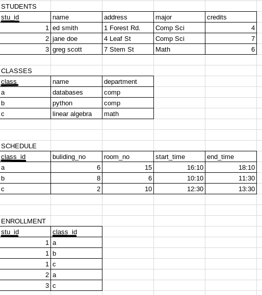
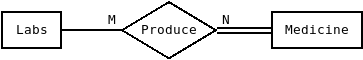

Relational Database Notes
Relational Database notes and basic sqlite syntax
Types of keys, Relational Algebra, SQL Syntax, Functional Dependencies, Normal Forms, and ER Diagram Notes.
Relational Database Notes.
Keys
A minimal set of attributes (columns) whose tuple values must be unique, in order to identify that tuple in the set or relation
The set of all minimal keys for a table are the candidate keys
A key such that if any attribute is removed it no longer holds (as unique)
The candidate key chosen by the table designer to serve as the principle key for a table
Are underlined usually when the schema is drawn
Any set of attributes that contains a key
Keys are minimal superkeys
Columns or Attributes containing a candidate key
Columns or Attributes that do not contain a candidate key
An attribute subset of a relation is a foreign key if it has the same domain as the primary key in another relation.
Table: CAR
| license_no | serial_no | make | model | year |
|---|
Primary Key: license_no
Candidate Keys: license_no, serial_no
Super key: license_no, serial_no, make, model, year
Relational Database Notes.
Relational Algebra
// PROJECT or p // Purpose: Select columns in the attribute list from the source relation //Example: Show all stu_id, and names p [stu_id, name] (STUDENTS) 1 | edsmith 2 | janedoe 3 | greg scott // SELECT or s // Purpose: Select specified rows from relation based on condition. can use <, >, <=, >=, !=, and, or not // Example: Get the names of all students with more than 5 credits p [name] (s [credits>5] (STUDENTS)) jane doe greg scott // UNION or U // Purpose: Forms a relation containing tuples in either relation, duplicates are removed // Example: Get the names of all students in either comp sci or math p [name] (s [major="Comp Sci"] (STUDENTS)) U (s [major="Math"] (STUDENTS)) ed smith jane doe greg scott // Natural Join: * // Purpose: Joins 2 relations on a common column, the common column is removed // Example: Get the class_ids of the classes ed smith is taking p [class_id] (s [name="ed smith"] (STUDENTS*ENROLLMENT)) a b c // Cartesian Product: x // Purpose: Allows data from different relations to be compared, must have column in common // Example: Get the names of the classes ed smith is taking p [CLASSES.name] (CLASSESx[CLASSES.class=ENROLLMENT.class_id](s [name="ed smith"] (STUDENTS*ENROLLMENT)) databases python linear algebra // Division Operator: ÷ // Purpose: Get rows that are in all elements of a set // Example: Find stu_id of students taking all classes p [stu_id] (ENROLLMENT ÷ (p [class_id] (SCHEDULE)) 1 // Intersection: INTERSECT // Purpose: Returns relations containing all tuples in both R1 and R2 (R1 INTERSECT R2) // Example: Get all students enrolled in both python and databases p [stu_id] ((s [name="databases"] (ENROLLMENTx[class_id=class]CLASSES)) INTERSECT (s [name="python"] (ENROLLMENTx[class_id=class]CLASSESS))) 1 // Difference: - // Purpose: Find all tuples in R1 that are not in R2 (R1 - R2) // Example: Get all students enrolled in python but not linear algebra p [stu_id] ((s [name="python"] (ENROLLMENTx[class_id=class]CLASSES)) - (s [name="linear algebra"] (ENROLLMENTx[class_id=class]CLASSES))) 2 // SUM // Purpose: Find the sum of all values in a column // Example: Get the total number of credits earned by the students SUM[:credits] (STUDENTS) 17 // AVERAGE // Purpose: Find the average of all values in a column // Example: Get the average number of credits earned AVERAGE[:credits] (STUDENTS) 6 // MINIMUM or MIN // Purpose: Find the minimum value in a column // Example: Get the least amount of credits earned MIN[name:credits] (STUDENTS) 4 // MAXIMUM or MAX // Purpose: Find the maximum value in a column // Example: Get the name of the student who earned the most credits p [name] (MAX [name: credits] (STUDENTS)) ed smith // COUNT: count // Purpose: Count the number of occurences of a particular value in a set // Example: Get the number of courses each student is taking p [name, COUNT] (STUDENTS*(count[stu_id:stu_id] (ENROLLMENT))) ed smith | 3 jane doe | 1 greg scott | 1
Relational Database Notes.
SQL Syntax
//SELECT //Purpose: Select columns in the attribute list from the source relation //Example: show all stu_id, and names SELECT stu_id, name FROM STUDENTS; 1 | edsmith 2 | janedoe 3 | greg scott //CREATE TABLE //Purpose: Create a new table //Example: Create a table to hold the names, employee id, and departments of professors CREATE TABLE PROFESSORS(id INTEGER NOT NULL PRIMARY KEY, name VARCHAR(100), department VARCHAR(20)); //INSERT INTO //Purpose: Add a row to an existing table //Example: Add a professor to the new table PROFESSORS INSERT INTO PROFESSORS(id, name, department) VALUES (1, 'John Smith', 'COMP'); 1 | John Smith | COMP //UPDATE ... SET //Purpose: Change the value of a column in a row //Example: Change the department of John Smith from COMP to MATH UPDATE PROFESSORS SET department='MATH' WHERE id=1; 1 | John Smith | MATH //UNION - OR //Purpose: Forms a relation containing tuples in either relation, duplicates are removed //Example: Get all the names of the students in either Comp Sci or Math SELECT name FROM STUDENTS WHERE major LIKE 'Math' OR major LIKE 'Comp Sci'; ed smith jane doe greg scott // NATURAL JOIN //Purpose: JOINS 2 relations on a common column, common columns must have same name, common column is removed //Example: Get the class_ids of the classes ed smith is taking SELECT class_id FROM STUDENTS NATURAL JOIN ENROLLMENT WHERE name LIKE 'ed smith'; a b c //JOIN //Purpose: Allows columns from different tables to be compared. //Example: Get the names of the classes ed smith is taking SELECT CLASSES.name FROM CLASSES JOIN (SELECT * FROM STUDENTS NATURAL JOIN ENROLLMENT WHERE name like 'ed smith') ON class like class_id; databases python linear algebra //ORDER BY //Purpose: Order the selected columns //Example: Order the students by the number of credits SELECT name FROM STUDENTS ORDER BY credits ASC; jane doe greg scott ed smith SELECT name FROM STUDENTS ORDER BY credits DESC; ed smith greg scott jane doe //DROP //Purpose: Delete table, or database //Example: Drop table PROFESSORS, and Drop the database UNIVERSITY DROP TABLE PROFESSORS; DROP DATABASE UNIVERSITY; //DELETE //Purpose: Deletes rows from the table //Example: Remove students from table STUDENTS whose major is comp sci DELETE FROM STUDENTS WHERE major like 'Comp Sci'; SELECT * FROM STUDENTS; 3 | greg scott | 7 Stem St | Math | 6 //ALTER TABLE - ADD COLUMN //Purpose: Add a column to an existing table //Example: Add column grade to table ENROLLMENT ALTER TABLE ENROLLMENT ADD COLUMN grade VARCHAR(1); UPDATE ENROLLMENT SET grade='A' WHERE stu_id=1 AND class_id like 'a'; SELECT * FROM ENROLLMENT; 1 | a | A 1 | b | NULL 1 | c | NULL 2 | a | NULL 3 | c | NULL //ALTER TABLE - DROP COLUMN //Purpose: Remove a column from an existing table //Example: Remove column grades from table ENROLLMENT ALTER TABLE ENROLLMENT DROP COLUMN grades; SELECT * FROM ENROLLMENT; 1 | a 1 | b 1 | c 2 | a 3 | c //ALTER TABLE - MODIFY COLUMN //Purpose: Modify the type of data in a column //Example: Increase the number of characters allowed for address in table STUDENTS ALTER TABLE STUDENTS MODIFY COLUMN address VARCHAR(120); //GROUP BY //Purpose: Group rows by a certain attribute //Example: Select departments table CLASSES without duplicates SELECT department FROM CLASSES GROUP BY department; comp math //COUNT //Purpose: Count the instances of a value in a relation //Example: Count the number of courses each student is taking SELECT name, COUNT(stu_id) FROM STUDENTS NATURAL JOIN ENROLLMENT; ed smith | 3 jane doe | 1 greg scott | 1 //HAVING //Purpose: group condition, can be used with aggregrate functions (count, max, ..) //Example: Get the names of students taking more than 1 courses SELECT name FROM STUDENTS NATURAL JOIN ENROLLMENT HAVING COUNT(stu_id) > 1; ed smith
Relational Database Notes.
Normal Forms
Normalization
The process of decomposing relational schemas that would have repeated facts into smaller relations
First Normal Form
Every non-prime attribute is functionally determined by a key.
Second Normal Form
The closure of functional dependency contains no partial dependencies
Third Normal Form
2NF is satisfied, and the functional dependency contains no transitive dependencies Y->A, where A is non-prime
Boyce-Cobb Normal Form
There exists no partial, or transitive dependencies
Relational Database Notes.
Functional Dependencies
if Y is a subset of X then X->Y //reflexive rule
if X->YZ then X->Y and X->Z //decomposition rule
if X->Y and Y->Z then X->Z //transitive rule
if X->Y, and X->Z, then X->YZ //union rule
if X->Y then WX->WY //augmentation rule
if X->Y and WY->Z then WX->Z //pseudo transitive rule
If a proper subset of a candidate key determines a non-prime attribute it is called a partial dependency
Example:
| Student_no | Course_no | Course_name |
|---|---|---|
| 1 | C1 | Dinosaurs |
| 2 | C2 | Baking |
| 1 | C2 | Baking |
The Course_name depends on the Course_no, and the candidate key is the student number and the course_no as there can be multiple instance of students, and of course_no but there is is only 1 instance of a student taken a certain course. Therefore this relation contains a partial dependency
If A -> B and B > C then A -> C is a transitive dependency.
Dependency X->Y is trivial if Y is a subset of X
F - set of functional dependencies. Closure of F: F⁺ is {X->Y | F logically implied X->Y}
Augmentation, Union, Decomposition: modify the RHS of Functional Dependencies
Augmentation, Reflexivity, and Pseudo-transivity: can effect LHS
To Test Equivalence
First Method:
- Compute the closure of F
- Compute the closure of G
- See if they equivalent
Second Method:
- Show that every Functional Dependency in F can be proven from G
- Show that every Functional Dependency in G can be proven from F
Relational Database Notes.
ER Diagrams
Weak Entities: Doesn't have suffecient attributes to form a primary key of its own. The primary key is formed by the primary key of the string entity set on which the weak entity set is existence dependent.
Total Participation: Indicated by double association line
Means all entities in an entity set must participate in the relation
Optional Participation: means that there are/can be some that do not participate in the relationship
Example:
Labs can exist without producing medicine.
Medicine participates totally in the relationship, Medicine can't exist unless produced in a lab
One-to-One
A record in 1 table is related to a record in another table
One-to-Many
A record in one table is related to many records in another table
Many-to-Many
Multiple records in one table are related to multiple records in another table
Example: N-N
A student is enrolled in multiple classes, and a classes has multiple students enrolled
STUDENTS
| Student_ID | Student |
|---|---|
| 1 | John |
| 2 | Jen |
CLASS_ENROLLMENT
| Student_ID | Class_ID |
|---|---|
| 1 | 3 |
| 1 | 5 |
| 2 | 3 |
CLASSES
| Class_ID | Class_Name |
|---|---|
| 3 | English |
| 5 | Math |